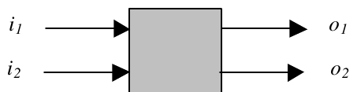
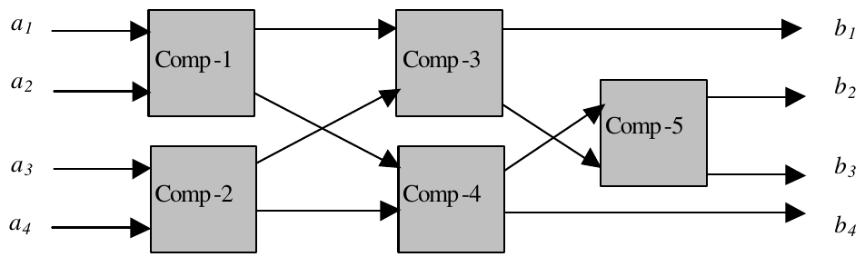

25th Annual ACM ICPC World Finals · Problem H
Professor Monotonic has been experimenting with comparison networks, each of which includes a number of two-input, two-output comparators. A comparator, as illustrated below, will compare the values on its inputs, i1 and i2, and place them on the outputs, o1 and o2, so that o1 ≤ o2 regardless of the relationship between the input values.

A comparison network has n inputs a1,a2,…,an and n outputs b1,b2,…,bn. Each of the two inputs to a comparator is either connected to one of the network’s n inputs or connected to the output of another comparator. Each of the two outputs from a comparator is either connected to one of the network’s n outputs or is connected to the input of another comparator. A graph of the interconnections of comparators must be acyclic. The illustration below shows a comparison network with four inputs, four outputs, and five comparators.

In operation, the network’s inputs are applied and the comparators perform their functions. Of course a comparator cannot operate until both of its inputs are available. Assuming a comparator requires one unit of time to operate, this sample network will require three units of time to produce its outputs. Comp -1 and Comp -2 operate in parallel, as do Comp -3 and Comp -4. Comp -5 cannot operate until Comp -3 and Comp -4 have comp leted their work.
Professor Monotonic needs help in determining which proposed comparison networks are also sorting networks, and how long they will take to perform their task. A sorting network is a comparison network for which the outputs are monotonically increasing regardless of the input values. The example above is a sorting network, since for all possible input values the output values will have the relation b1 ≤ b2 ≤ b3 ≤ b4.
The professor will provide a description of each comparison network to be examined. Each description will begin with a line containing values for n (the number of inputs) and k (the number of comparators). These values satisfy 1 = n = 12 and 0 = k = 150. This is followed by zero or more non-empty lines, each containing at most 15 pairs of comparator inputs. The source of the input to each comparator is given by a pair of integers i and j. Each of these specifies either the subscript of a network input that is input to the comparator (that is, ai or aj), or the corresponding output of a preceding comparator.
The outputs of a comparator are numbered the same as its inputs (in other words, if the comparator’s inputs are i and j, the corresponding outputs are also labeled i and j). The order in which these pairs appear is significant, and affects the order in which the comparators operate. If two pairs contain an integer in common, the order of the corresponding comparators in the network is determined by the order of the pairs in the list. For example, consider the input data for the example shown:
4 5 1 2 3 4 1 3 2 4 2 3
This indicates there will be four input values and five comparators in the network. The first comparator (Comp -1) will receive its input values from network inputs a1 and a2. The second comp arator (Comp -2) will receive its input values from network inputs a3 and a4. The third comparator (Comp -3) will receive its first input from the first output of Comp -1, and will receive its second input from the first output of Comp -2. Similarly, the fourth comparator (Comp -4) will receive its first input from the second output of Comp -1, and will receive its second input from the second output of Comp -2. Finally, the fifth comparator (Comp -5) will receive its first input from the first output of Comp -4, and will receive its second input from the second output of Comp -3. The outputs b1,b2,…,bn are taken from the first output of Comp -3, the first output of Comp -5, the second output of Comp -5, and the second output of Comp -4, respectively.
A pair of zeros will follow the input data for the last network.
For each input case, display the case number (cases are numbered sequentially starting with 1), an indication of whether the network is a sorting network or not, and the number of time units required for the network to operate (regardless of whether it is a sorting network or not).
4 5 1 2 3 4 1 3 2 4 2 3 8 0 3 3 1 2 2 3 1 2 0 0
Case 1 is a sorting network and operates in 3 time units. Case 2 is not a sorting network and operates in 0 time units. Case 3 is a sorting network and operates in 3 time units.